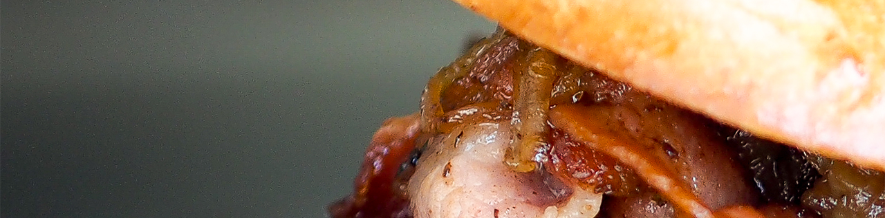

<div class="row">
  <section class="qui">
    
    <h2 class="large-offset-1 large-4 small-4 medium-4">Qui ?</h2>
    <div class="large-offset-2 large-8 small-12 medium-12">
      <section id="quesako">
        <h3 class="small-12 medium-12">LE BAS MOTEUR, QUÉSACO ?</h3>
        <p class="small-12 medium-12">Le Bas Moteur est un camion ravitailleur itinérant à Strasbourg et ses environs, nous distribuons sandwichs, burgers, frites, salades, desserts et cafés.
          En effet, ce projet a pour idée de rapprocher les produits de qualité que nous trouvons en France et la tradition de la street food développé aux Etats-Unis, dans le but de mettre en avant une street cuisine française bien loin du traditionnel jambonbeurre ou des chaînes de restauration rapide. Le Bas Moteur est à l’image de ses deux créateurs, Giusepe et Marco : simple et efficace.</p>
      </section>
    </div>
  </section>
</div>
